Pustynny wyścig
Poziom 2
Jest to gra dla dwóch graczy, podczas której papuga i lis ścigają się po pustyni. Gracze kierują swoją postacią wciskając szybko klawisz na klawiaturze. Zwierze, które pierwsze dotrze do krawędzi ekranu, wygrywa.
Chcemy, aby duszki poruszały się w odpowiedzi na wciśnięcie klawiszy.
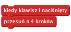
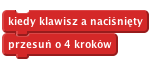
Wciśnij zieloną flagę
Czy lew i papuga poruszają się po ekranie, gdy wciskasz 'A' i 'L'?
Aby móc określić później, kto wygrał, musimy najpierw wiedzieć, kiedy wyścig się rozpoczął. Dodajmy przycisk Start.
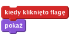
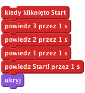
Wciśnij zieloną flagę
Czy widzisz odliczanie po kliknięciu przycisku? Czy przycisk znika po zakończeniu odliczania?
Chcemy, aby ścigający poruszali się tylko po rozpoczęciu wyścigu. Chcemy też wiedzieć, kiedy wyścig się zakończył. Będziemy potrzebować zmiennej do przechowywania tej informacji.
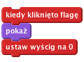
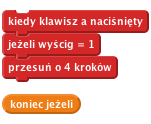
Wciśnij zieloną flagę
Czy lew i papuga ruszają się tylko po zakończeniu odliczania?
Teraz chcemy notować, kto wygrał wyścig i usuwać tę informację po zakończeniu gry, aby można było zacząć od nowa.
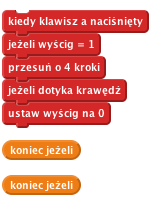
Teraz chcemy, aby papuga dała nam znać, czy wygrała. Nagraj nowy dźwięk dla papugi, który będzie odegrany, jeżeli papuga wygra. Przejdź na kartę dźwięki duszka i nagraj odgłos zwycięstwa!
Dodaj do skryptu komendę, która odgrywa to nagranie po wygranej:
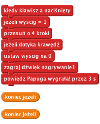
Wciśnij zieloną flagę
Czy działa rozpoczynanie wyścigu po wciśnięciu przycisku? Można się ścigać wciskając przyciski 'A' i 'L'?
Czy duszki dobrze ogłaszają, który z nich wygrał?
Po zakończeniu wyścigu musimy powiedzieć wszystkim duszkom, że to koniec i zresetować grę, aby mogła się zacząć od nowa.
Duszek, który wygra, musi ogłosić swoje zwycięstwo.
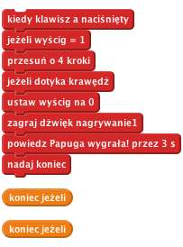
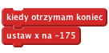
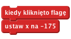
Wciśnij zieloną flagę
Możesz się ścigać z przyjacielem, kiedy jedno z was kieruje papugą wciskając 'A', a drugie kieruje lwem wciskając 'L'?
Brawo! To by było na tyle, teraz możesz się cieszyć swoją grą!
Nie zapomnij, że możesz podzielić się swoją grą ze swoimi przyjaciółmi i rodziną. Żeby to zrobić, kliknij menu Udostępnij.